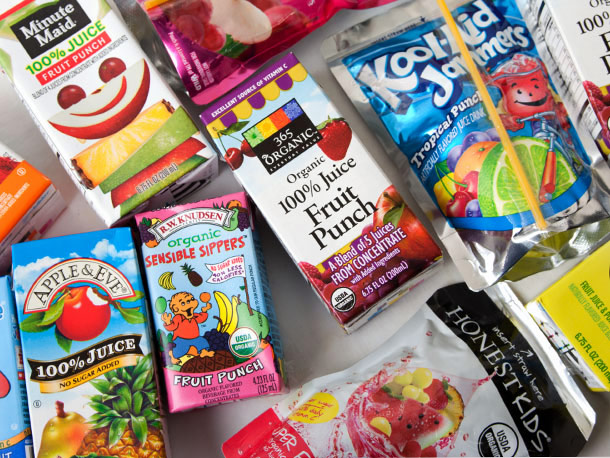

A Juice Box
A juice box, also called a carton or popper, is a small
container used to conveniently carry and consume drinks.
They are frequently made of paperboard with an aluminum
foil lining, but variations exist. Juice boxes are most
popular with children, although other uses include
emergency drinking water, milk and wine.
Ruben Rausing first created a product in 1963
that consisted of a box that would be used for
containing liquids, more specifically, milk.
His creation was named the Tetra Brik, and
gained popularity because the product was
efficient and a major space saver compared
to the canisters that were previously used.
The juice box was officially incorporated in
the U.S. market in 1980. After its introduction,
the product gained almost instant popularity and
the market began to grow at a fast rate. According
to an article on the website E notes, in 1986, only
six years after the product’s introduction, juice boxes
accounted for 20% of the United States juice market, as
more and more companies were introducing their own lines
of juice boxes.

|